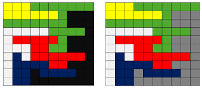

Welcome to our comprehensive guide on the Flood Fill Algorithm, a pivotal technique in computer graphics used for coloring bounded areas and creating visually appealing designs. In this exploration, we delve into the intricacies of Flood Fill, understanding its principles, applications, and creative potentials. Whether you're a novice or a seasoned graphic designer, this guide will equip you with the knowledge to add depth and vibrancy to your digital creations.
Flood Fill is an area-filling algorithm that determines the area connected to a given node in a multi-dimensional array. It recursively spreads color from a source point to neighboring points until a boundary is encountered. This algorithm is foundational in applications requiring efficient area coloring and boundary detection.
Choose a seed point within the area you want to fill.
Check the neighboring pixels of the seed point.
Fill the current pixel with the desired color.
Recursively apply the Flood Fill algorithm to adjacent pixels.
Continue the process until all connected areas are filled, avoiding boundary pixels.
Explore the diverse applications of Flood Fill, from graphic editing software where it's used for filling shapes and creating gradients, to gaming environments where it brings life to in-game terrains and structures. Understanding Flood Fill opens the door to endless creative possibilities.
We explore the Boundary-Fill variant of the Flood Fill algorithm, focusing on its ability to color areas enclosed by boundaries. Learn the intricacies of boundary detection and understand how this technique is employed in graphic design applications for precise area coloring.
The Boundary-Fill algorithm fills the interior of an enclosed area. It checks if the current pixel is a boundary pixel. If not, it fills the current pixel and recurs for neighboring pixels.
Delve into the Seed-Fill variant, a versatile approach that allows users to fill areas based on seed points. Understand the role of seed points in initiating the flood fill process and explore its applications in user-driven colorization and interactive design.
The Seed-Fill algorithm starts from a seed point and fills the area connected to the seed. It checks if the current pixel is within the boundary. If yes, it fills the pixel and recurs for neighboring pixels.
Explore the artistic potential of Flood Fill in creating intricate patterns, vibrant textures, and immersive backgrounds. Unleash your creativity by mastering the algorithm's nuances and integrating it into your artistic workflow.
By mastering the Flood Fill Algorithm, you gain a powerful tool to transform digital canvases into captivating masterpieces. Whether you're a digital artist, game developer, or graphic designer, this guide empowers you to infuse your creations with color, depth, and creativity. Join us on this journey to unlock the potential of Flood Fill and elevate your graphic design endeavors to new heights.